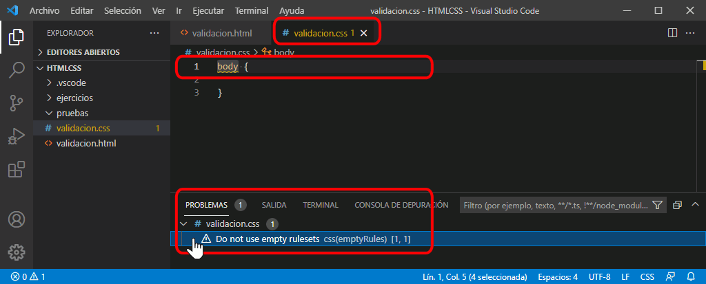

Esta lección está en elaboración.
Esta lección está en elaboración.
En la barra lateral se muestran dos iconos acompañados de dos números que corresponden al número de errores y avisos detectados por Visual Studio Code en los archivos abiertos. Si no se ha detectado ningún error ni problema, se muestran ceros. Visual Studio Code detecta por él mismo algunos tipos de errores y avisos detectados, pero se pueden instalar extensiones que detectan errores y avisos adicionales, como se explica más adelante en esta lección.

Si Visual Studio Code detecta un error, se muestra el valor distinto de cero.

Haga clic en los iconos para abrir el panel, que mostrará los errores detectados, ordenados por ficheros.

Haga clic en el error para mostrar en el editor el documento correspondiente y la línea en la que se ha identificado el problema. Tenga en cuenta que Visual Studio Code muestra la línea en la que ha identificado el problema, pero el origen del problema puede estar en esa línea o en una línea anterior.
El icono de la derecha (triángulo con exclamación) corresponde a avisos de todo tipo, que en general se aconseja corregir, pero que a menudo no impiden que el documento se muestre correctamente. Por ejemplo, la captura siguiente muestra un aviso (regla vacía) que corresponde más a una buena práctica y no provoca ningún problema real.(

El icono de la izquierda (círculo con cruz) corresponde a los errores de sintaxis que deben corregirse para que el documento sea válido y se pueda mostrar correctamente. A veces un error provoca que Visual Studio Code detecte más errores que realmente no existen. Por eso se aconseja resolver los problemas en orden, para que al corregir uno, desaparezcan los siguientes errores que provocaba el anterior.

Cuando se corrigen los errores y avisos, la pestaña Problemas del panel indica que no hay problemas en los archivos abiertos. Puede cerrar el panel haciendo clic en los iconos de la barra lateral o en el icono en forma de cruz situado en la parte superior derecha del panel.

Las páginas web se pueden validar en Visual Studio Code mediante la extensión HTMLHint. Esta extensión instala y utiliza el analizador de código estático HTMLHint. Este validador no detecta todos los posibles errores, pero sí los más importantes.
Los tipos de errores detectados de forma predeterminada por la extensión HTMLHint son los siguientes:
Además, HTMLHint permite detectar otro tipos de errores:
El valor de cada propiedad suele true (activada) o false (desactivada), salvo en los casos en que ofrece más posibilidades (en la explicación anterior los valores se han indicado entre paréntesis).
Notas:
Se puede modificar la configuración predeterminada de la extensión HTMLHint detallando las opciones deseadas:
En ambos casos, es necesario incluir las diez propiedades predeterminadas ya que dejan de aplicarse de manera predeterminada.
La configuración recomendada para seguir el curso Páginas web HTML y hojas de estilo CSS de mclibre.org es la siguiente: (se muestran las dos formas alternativas de hacerlo)
// Extensión HTMLHint
//
// HTMLHint: Options
// Opciones de configuración de HTMLHint
"htmlhint.options": {
"tagname-lowercase": true,
"attr-lowercase": ["allowReorder", "attributeName", "attributeType", "autoReverse", "baseFrequency", "baseProfile", "calcMode", "clipPathUnits", "contentScriptType", "contentStyleType", "diffuseConstant", "edgeMode", "externalResourcesRequired", "filterRes", "filterUnits", "glyphRef", "gradientTransform", "gradientUnits", "kernelMatrix", "kernelUnitLength", "keyPoints", "keySplines", "keyTimes", "lengthAdjust", "limitingConeAngle", "markerHeight", "markerUnits", "markerWidth", "maskContentUnits", "maskUnits", "numOctaves", "pathLength", "patternContentUnits", "patternTransform", "patternUnits", "pointsAtX", "pointsAtY", "pointsAtZ", "preserveAlpha", "preserveAspectRatio", "primitiveUnits", "refX", "refY", "repeatCount", "repeatDur", "requiredExtensions", "requiredFeatures", "specularConstant", "specularExponent", "spreadMethod", "startOffset", "stdDeviation", "stitchTiles", "surfaceScale", "systemLanguage", "tableValues", "targetX", "targetY", "textLength", "viewBox", "viewTarget", "xChannelSelector", "yChannelSelector", "zoomAndPan"],
"attr-value-double-quotes": true,
"doctype-first": true,
"tag-pair": true,
"spec-char-escape": true,
"id-unique": true,
"src-not-empty": true,
"attr-no-duplication": true,
"title-require": true,
"alt-require": true,
"doctype-html5": true,
"id-class-ad-disabled": true
},
//
//
{
"tagname-lowercase": true,
"attr-lowercase": ["allowReorder", "attributeName", "attributeType", "autoReverse", "baseFrequency", "baseProfile", "calcMode", "clipPathUnits", "contentScriptType", "contentStyleType", "diffuseConstant", "edgeMode", "externalResourcesRequired", "filterRes", "filterUnits", "glyphRef", "gradientTransform", "gradientUnits", "kernelMatrix", "kernelUnitLength", "keyPoints", "keySplines", "keyTimes", "lengthAdjust", "limitingConeAngle", "markerHeight", "markerUnits", "markerWidth", "maskContentUnits", "maskUnits", "numOctaves", "pathLength", "patternContentUnits", "patternTransform", "patternUnits", "pointsAtX", "pointsAtY", "pointsAtZ", "preserveAlpha", "preserveAspectRatio", "primitiveUnits", "refX", "refY", "repeatCount", "repeatDur", "requiredExtensions", "requiredFeatures", "specularConstant", "specularExponent", "spreadMethod", "startOffset", "stdDeviation", "stitchTiles", "surfaceScale", "systemLanguage", "tableValues", "targetX", "targetY", "textLength", "viewBox", "viewTarget", "xChannelSelector", "yChannelSelector", "zoomAndPan"],
"attr-value-double-quotes": true,
"doctype-first": true,
"tag-pair": true,
"spec-char-escape": true,
"id-unique": true,
"src-not-empty": true,
"attr-no-duplication": true,
"title-require": true,
"alt-require": true,
"doctype-html5": true,
"id-class-ad-disabled": true
}
Visual Studio Code incluye un validador de hojas de estilo similar a CSSLint.
lint fue el nombre de un programa creado a finales de los 70 para analizar programas escritos en C en busca de expresiones sintácticamente correctas pero que pudieran dar lugar a errores en los programas. Actualmente, lint se utiliza de forma genérica para referirse a las heramientas que analizan programas o documentos en busca de errores sintácticos, de posibles fuentes de errores, o incluso programas que no siguen reglas de estilo.
El validador de hojas de estilo de Visual Studio Code está activado de forma predeterminada. En el archivo de Preferencias de configuración se encuentra la preferencia que permite desactivar o activar la validación:
{
// Habilita o deshabilita todas las validaciones
"css.validate": true,
}
En el archivo de Preferencias de configuración se encuentran también las preferencia que permiten desactivar o activar cada uno de los tipos de validación disponibles.
Como CSSLint, Visual Studio Code nos da dos tipos de avisos:
Los errores deben corregirse necesariamente, porque la hoja de estilo no puede interpretarse correctamente mientras contenga errores.
Pero los consejos deben tomarse como lo que son: consejos, que en unos casos es conveniente seguir, pero en otros casos no, ya que puede haber motivos para estar en desacuerdo con ellos o pueden ser consejos pensados para hojas de estilo complejas, no hojas de estilo sencillas como las que se utilizan en este curso. A medida que el alumno vaya adquiriendo experiencia, podrá ir juzgando por sí mismo si seguir o no esos consejos.
El validador de hojas de estilo de Visual Studio Code tiene configurados de forma predeterminada como errores los siguientes tipos de validación.
{
// Los colores hexadecimales deben estar formados por tres o seis números hexadecimales.
"css.lint.hexColorLength": "error",
}
{
// Número de parámetros no válido
"css.lint.argumentsInColorFunction": "error",
}
El validador de hojas de estilo de Visual Studio Code tiene configurados de forma predeterminada como avisos los siguientes tipos de validación.
{
// Cuando use un prefijo específico del proveedor, incluya también la propiedad estándar.
"css.lint.vendorPrefix": "warning",
}
{
// No use conjuntos de reglas vacíos
"css.lint.emptyRules": "warning",
}
{
// La regla @font-face debe definir las propiedades "src" y "font-family"
"css.lint.fontFaceProperties": "warning",
}
{
// Propiedad desconocida.
"css.lint.unknownProperties": "warning",
}
{
// La propiedad se ignora a causa de la pantalla. Por ejemplo, con 'display: inline', el ancho, el alto, el margen superior e inferior y las propiedades de float no tienen efecto.
"css.lint.propertyIgnoredDueToDisplay": "warning",
}
El validador de hojas de estilo de Visual Studio Code tiene desactivados de forma predeterminada los siguientes tipos de validación.
{
// Cuando use un prefijo específico del proveedor, compruebe que también haya incluido el resto de propiedades específicas del proveedor.
"css.lint.compatibleVendorPrefixes": "ignore",
}
{
// No use definiciones de estilo duplicadas
"css.lint.duplicateProperties": "ignore",
}
{
// Las instrucciones Import no se cargan en paralelo
"css.lint.importStatement": "ignore",
}
{
// No use ancho o alto con el relleno o los bordes.
"css.lint.boxModel": "ignore",
}
{
// Se sabe que el selector universal (*) es lento
"css.lint.universalSelector": "ignore",
}
{
// No se necesita una unidad para cero
"css.lint.zeroUnits": "ignore",
}
{
// Las modificaciones de IE solo son necesarias cuando admiten IE7 y anteriores
"css.lint.ieHack": "ignore",
}
{
// Propiedad específica del proveedor desconocida.
"css.lint.unknownVendorSpecificProperties": "ignore",
}
{
// Le recomendamos no usar !important. Esto indica que la especificidad de todo el CSS está fuera de control y que debe refactorizarse.
"css.lint.important": "ignore",
}
{
// Le recomendamos no usar 'float'. Los floats producen CSS frágiles, fáciles de corromper si cambia cualquier aspecto del diseño.
"css.lint.float": "ignore",
}
{
// Los selectores no deben contener identificadores porque estas reglas están estrechamente ligadas a HTML.
"css.lint.idSelector": "ignore",
}